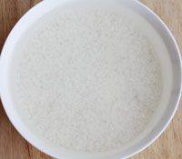
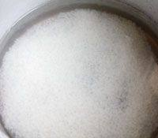
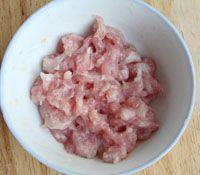
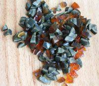
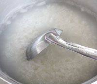
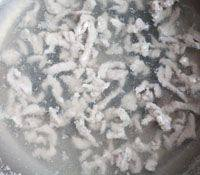
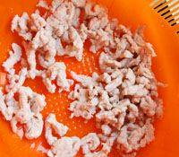
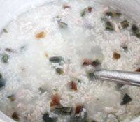

|  | 1.将大米放入大碗中，加水揉搓后，洗净，放入水中浸泡30分钟。 |
|  | 2.将泡过的大米再度洗净，沥去水后倒入锅中，加入水适量，水量约为平时煮饭时的2倍。盖上锅盖，按下开关开始煮。 |
|  | 3.瘦肉浸泡出血水后，再冲洗干净，切成肉丝，放入盐适量、鸡精1/4勺、料酒、淀粉，抓拌均匀后腌制10分钟。 |
|  | 4.皮蛋剥皮，切成小丁。 |
|  | 5.粥煮开后锅盖挪开一些留出缝隙避免扑锅，煮至10分钟左右粥水渐浓后拿开锅盖不时用勺搅动。 |
|  | 6.另用一口煮锅，倒入少量水，煮开后将肉丝下入，用筷子拨散，煮至全部颜色变浅。 |
|  | 7.捞出后用温水冲洗去浮沫，沥去水。 |
|  | 8.粥煮得米完全熟透粥水也比较稠后放入肉丝、皮蛋，盐适量、鸡精1/4勺、再煮1分钟左右，用勺子不断搅动，放入香油，搅匀后盛出即可。 |